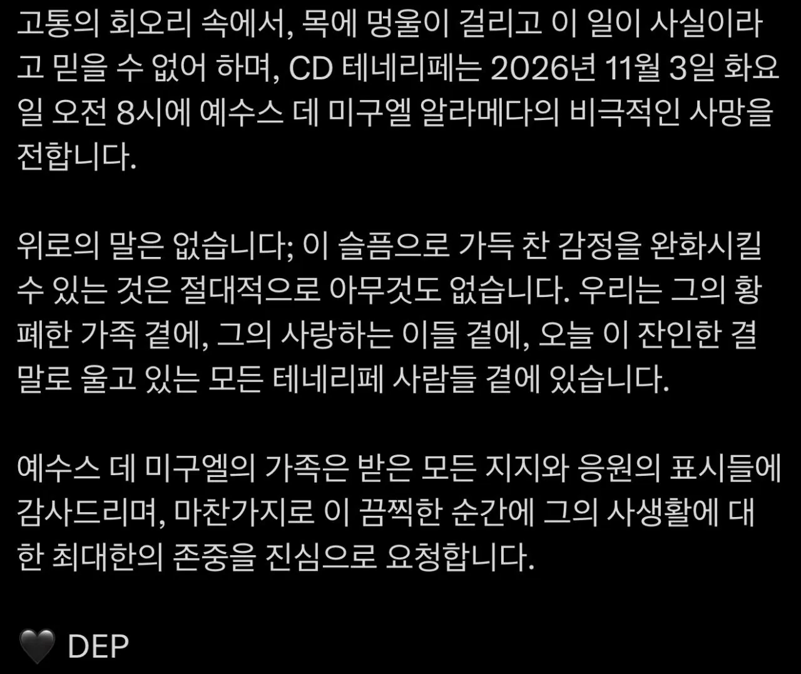

키퍼가 하프라인까지 나와 플라잉니킥으로 가슴 직각으로 타격후
심정지상태로 병원 이송중 cpr로 맥박돌아왔지만 의식 회복 못하고 사망함

키퍼가 하프라인까지 나와 플라잉니킥으로 가슴 직각으로 타격후
심정지상태로 병원 이송중 cpr로 맥박돌아왔지만 의식 회복 못하고 사망함
적팀 23번이 넘어진사람 체크하고 심각한거같아서 의무진 바로 부르네
결과는 최악이였지만 저런사람이 있어야 골든타임같은게 지켜질듯
죽일생각은 당연히 없었겠지만 저건 정상적인 플레이가 아니라 상대 담구겠다는 의도는 확실히 있는 동작이라 과실치사~상해치사로 보는게 맞을거같음
미친 검둥이새끼
미친 새끼 뻔뻔하게 저 짓해놓고 당당하다 좆됐다 싶으니까 달려가는 꼬라지 역겹네
담그려는 의도가 너무 명확한데?
축구리그 흑인 시대 개막 ㄷㄷ